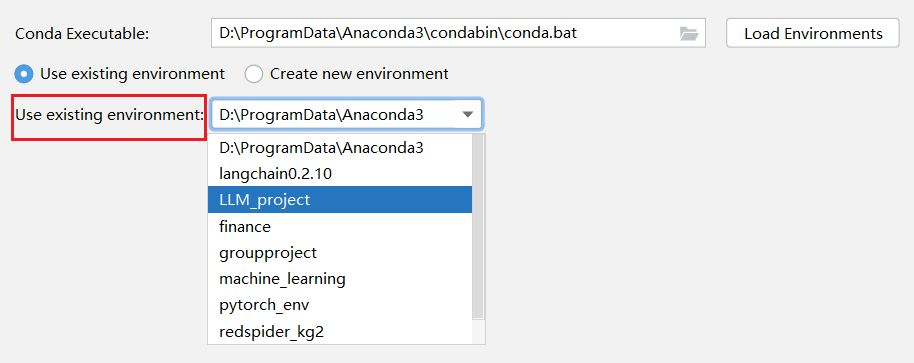
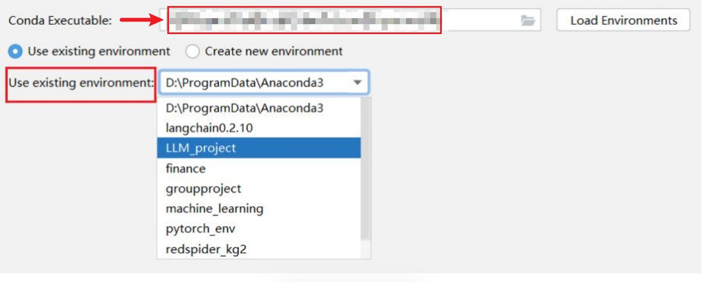
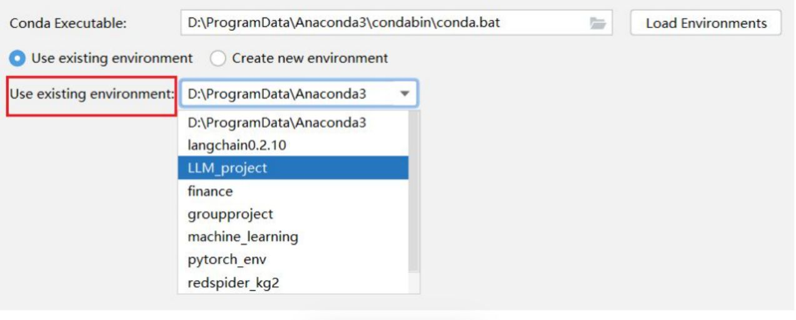

Tags: 导入Edge::1-22
Prompt Tuning 是一种高效的模型适应方法，旨在将什么调整以适应什么任务，而无需怎么样？
预训练语言模型（如GPT系列、BERT等），特定的下游任务，无需对整个模型进行微调。
Tags: 导入Edge::1-22
P Tuning 通过优化一组什么样的向量，将这些向量插入到模型的哪里，从而引导模型怎么样？
连续的、可训练的提示（prompt）的向量，模型的输入中，引导模型生成符合特定任务要求的输出。
Tags: 导入Edge::1-22
P Tuning 过程中，冻结预训练模型是什么意思？【优化谁而什么不变？】
在训练过程中，仅优化这些提示向量的参数，而保持预训练模型的其他参数不变。
Tags: 导入Edge::1-22
P Tuning 过程中，任务适应 是什么意思？【通过什么优化方法来调整什么？】
任务适应：通过梯度下降等优化方法，调整提示向量，使其在特定任务上引导模型产生最佳性能。
Tags: 导入Edge::1-22
相比于微调整个模型，Prompt Tuning 的优势是什么？【显著减少了什么？】
Prompt Tuning 只需优化少量的提示向量，显著减少了训练参数。
Tags: 导入Edge::1-22
Prompt Tuning 的中文名称是什么？
提示调优。
Tags: 导入Edge::1-22
P-Tuning v1 通过在模型的哪里插入多个什么（通常称为“哪个英文单词”）。
输入层，插入多个连续的提示向量，称为prefix。
Tags: 导入Edge::1-22
P-Tuning v1 通过在模型的输入层插入多个连续的提示向量（通常称为“prefix”），这些向量在哪里进行传递和调整。
整个模型的多个层级中进行传递和调整。
Tags: 导入Edge::1-22
P-Tuning v1 的多层提示是什么意思？【不仅在哪里插入提示，还在哪里插入？】
不仅在输入层插入提示，还在模型的中间层插入提示向量，使得提示信息能够在更深层次影响模型的表示。
Tags: 导入Edge::1-22
P-Tuning v1 的多层提示是不仅在输入层插入提示，还在模型的中间层插入提示向量，使得提示信息能够怎么样？
能够在更深层次影响模型的表示。
Tags: 导入Edge::1-22
在 P-Tuning v1 的基础上，P-Tuning v2 更深层次的集成，提示向量不仅在中间层插入，还可能在更深层次或更细粒度的层级进行集成，使得提示信息能够怎么样？
更全面地影响模型的各个部分。
Tags: 导入Edge::1-22
P-Tuning v1 和 P-Tuning v2 ，在提示结构上的区别是什么？
P-Tuning v1 主要在输入层和部分中间层插入提示向量，而 P-Tuning v2 则在更多层级和更灵活的方式中集成提示。
Tags: 导入Edge::1-22
传统上，如果你想让像GPT这样的模型完成一个新任务，通常需要怎么做，以及这样的效果是什么？
而 P Tuning 的做法是，什么样的?
- 微调整个模型，这样做不仅耗时还需要大量的计算资源。
- 只调整一小部分叫做“提示向量”的参数，这些提示向量就像是给模型的小提示，告诉它该怎么做。
Tags: 导入Edge::1-22
P-Tuning v2 是 P Tuning v1 的一个升级版，意思是“增强提示调优”。如何理解？【不仅在哪里添加提示向量，而且怎么样。】
它不仅仅是在模型的输入层加提示向量，还会在模型的多个层级中插入这些提示，让提示信息能更深入地影响模型的处理过程。
Tags: 导入Edge::1-22
指代消解和实体消歧，这两个技术分别解决是什么词的问题？
指代消解 解决的是指代词指向的问题，
另一个解决的是多义词的问题
Tags: 导入Edge::1-22
指代消解（Coreference Resolution）的作用范围以及目标是什么？
- 作用范围：文本内部
- 目标：在一段文本中，确定不同的词语或短语是否指向同一个实体。
Tags: 导入Edge::1-22
实体消歧（Entity Disambiguation）的作用范围以及目标是什么？
作用范围：文本与知识库之间目标：将文本中的一个模糊或多义的实体提及，链接到知识库中唯一且具体的实体。
Tags: 导入Edge::1-22
指代消解（Coreference Resolution）和实体消歧（Entity Disambiguation）
分别对应的核心问题是什么？
- 这段话中，这些词指的是同一个实体吗？
- 这个名称在知识库中具体指的是哪个实体？
Tags: 导入Edge::1-22
在知识融合阶段，使用什么技术，以确保从不同数据源中提取和整合的信息准确且一致。
Tags: 导入Edge::1-22
指代消解和实体消歧的区别是什么？【面试回答】
指代消解和实体消歧是知识融合阶段中两个重要但不同的技术。指代消解主要用于识别文本中不同表达是否指向同一实体，例如将‘他’指代到前文提到的具体人物。而实体消歧则用于确定一个实体提及在知识库中对应的具体实体，例如区分‘Apple’是指苹果公司还是水果。
Tags: 导入Edge::1-22
实体对齐（Entity Alignment）和关系对齐（Relation Alignment）是知识图谱融合过程中两个关键但不同的任务。虽然它们在目标上有相似之处，这个相似之处是什么？【统一什么来消除什么？】
即通过统一不同数据源中的表示来消除歧义性/冗余。
Tags: 导入Edge::1-22
实体对齐确保了什么？【谁在哪里的唯一表示？】
确保了文本中的同一实体在知识图谱中只有一个唯一的表示。
Tags: 导入Edge::1-22
通过实体对齐和关系对齐，我们能够消除什么？
消除不同数据源之间的冗余和不一致性。
Tags: 导入Edge::1-22
槽位是否等同于关键词？
不是，槽位是关键词的类别，槽位值才是是关键词。
Tags: 导入Edge::1-22
槽位填充不仅仅是提取关键词，而是什么？
将这些提取到的关键词 注入到 预定义的“槽”中。
Tags: 导入Edge::1-22
CasRel模型属于联合级联模型，那么该如何理解“联合”与“级联”这两个概念的含义呢？
所谓“联合”，是指在一个模型中同时处理实体识别与关系抽取这两项任务。也就是说，这两个任务共享同一个BERT模型输出的语义层。在训练过程中，获取总损失后进行反向传播，进而同步更新参数。而“级联”则是指在预测过程中，这两个任务按先后顺序执行，先进行实体识别，之后再开展关系抽取。
Tags: 导入Edge::1-22
交叉熵损失函数包含哪两个阶段？它们在公式中对应的英文符号分别是什么？
这两个阶段分别是
SoftMax归一化，对应符号为s；
负对数函数，在公式中对应的是 -log。
Tags: 导入Edge::1-22
请用一句话描述交叉熵损失函数的操作步骤。
将概率分布的对数值与真实标签的独热编码相乘，累计求和后取其负值。
Tags: 导入Edge::1-22
自编码模型的核心是先对数据进行编码，再进行解码。其中一种实现方式是MLM，那么另一种方式是什么呢？
另一种方式是将数据压缩为更小的表示形式，随后再还原为原始数据。
Tags: 导入Edge::1-22
自编码模型和自回归模型的核心本质是使用了不同的mask。分别指的是什么？
自编码模型的核心在于采用了MLM预训练任务；
自回归模型的核心则是运用了后续掩码，使得模型无法获取未来信息。
Tags: 导入Edge::1-22
在pipeline方式中，实体抽取和关系抽取分别采用了什么模型？
实体抽取采用的是BiLSTM加CRF模型，
关系抽取采用的是BiLSTM加Attention模型。
Tags: 导入Edge::1-22
困惑度用于衡量什么？【预测单词的角度。】
它衡量的是预测每个单词时平均有多少种分支或可能性。
Tags: 导入Edge::1-22
需将数据处理成何种格式的文件才能插入Neo4j？插入Neo4j时采用了什么具体步骤？
需将数据处理为JSONL格式，每行都是一个字典，每个字典包含spo三元组。
循环遍历这些三元组，将其拼接到Cypher查询模板中构成查询语句，然后插入到Neo4j数据库中。
Tags: 导入Edge::1-22
L1正则化 和 L2正则化，分别的使用场景是什么？【分别对权重和特征的影响是什么？】
L1则是将一些权重归零，实现特征选择。
L2则是保留所有的权重，但是呢权重都普遍偏小，但是所有特征都有贡献。
- L1：希望模型参数稀疏化，即将一些权重变为零，从而实现特征选择。
- L2：当希望所有特征都有贡献，但不希望某些权重过大时。防止模型权重过大，减小模型复杂度，提升模型的泛化能力。
Tags: 导入Edge::1-22
训练 深度学习模型（如BERT、BiLSTM）时，可以在哪里加入L1和L2正则化项。
模型的损失函数中。
Tags: 导入Edge::1-22
L1 和 L2正则化，谁用于约束模型权重，提升泛化能力，谁用于特征选择?
L1正则化用于特征选择，L2正则化用于约束模型权重，提升泛化能力。
Tags: 导入Edge::1-22
RAG主要功能是根据用户提出的问题，通过什么搜索从本地数据库中检索相关文档内容，构建什么，并利用大型语言模型生成专业且简洁的回答。
向量相似性搜索，检索相关文档内容，构建上下文提示。
Tags: 导入Edge::1-22
使用什么将本地文档转化为向量，并加载存储在什么数据库。
使用预训练的嵌入模型，FAISS中的向量数据库。
Tags: 导入Edge::1-22
RAG构建提示模板：将什么和什么结合，形成供LLM的提示信息prompt。
将检索到的上下文信息与用户问题结合。
Tags: 导入Edge::1-22
RAG里面，使用哪个嵌入模型？
mxbai-embed-large。
Tags: 导入Edge::1-22
mxbai-embed-large的嵌入模型，将什么转换为什么。
将文本转化为向量表示
Tags: 导入Edge::1-22
mxbai-embed-large的嵌入模型，将文本转化为向量表示。
这种表示方式能捕捉什么，使得相似文本在哪里距离更近。
捕捉文本的语义信息，在向量空间中。
Tags: 导入Edge::1-22
FAISS数据库 的全称是什么？
FAISS（Facebook AI Similarity Search）。
Tags: 导入Edge::1-22
通过FAISS.xxx方法加载本地存储的向量数据库faiss/wuliu
load_local。
Tags: 导入Edge::1-22
利用加载的FAISS数据库，k=2 是什么意思？
根据用户的问题进行相似性搜索，检索出与问题最相关的前2篇文档。
Tags: 导入Edge::1-22
PromptTemplate这个类是定义什么？【包含哪两方面内容的模板？】
定义一个包含上下文和问题的模板。
Tags: 导入Edge::1-22
embeddings = OllamaEmbeddings(model="mxbai-embed-large", temperature=0)
db = FAISS.load_local("faiss/wuliu", embeddings)
这两行代码的作用是什么？
初始化嵌入模型，
加载本地FAISS向量数据库。
Tags: 导入Edge::1-22
利用ollama，初始化嵌入模型并加载本地FAISS向量数据库。
使用的那两个api？
embeddings = OllamaEmbeddings(model="mxbai-embed-large", temperature=0)
db = FAISS.load_local("faiss/wuliu", embeddings)
Tags: 导入Edge::1-22
docs = db.similarity_search(question, k=2)
这行代码的作用是什么？
相似性搜索：检索与问题最相似的2篇文档。
Tags: 导入Edge::1-22
相似性搜索：检索与问题最相似的2篇文档。【代码】
docs = db.similarity_search(question, k=2)
Tags: 导入Edge::1-22
PROMPT_TEMPLATE = """
基于以下已知信息，简洁和专业的来回答用户的问题。不允许在答案中添加编造成分。
已知内容:
{context}
问题:
{question}"""
后续的PromptTemplate这个部分怎么写？
prompt = PromptTemplate(input_variables=["context", "question"], template=PROMPT_TEMPLATE,)
my_pmt = prompt.format(context=related_content,question=question)
Tags: 导入Edge::1-22
PromptTemplate 这个类里面的两个参数是什么以及分别的类型是什么？
input_variables 是字符串列表,
template是字符串。
Tags: 导入Edge::1-22
prompt是PromptTemplate的实例化对象，调用哪个方法来拼接问题和答案到模板里面？
format。
Tags: 导入Edge::1-22
prompt是PromptTemplate的实例化对象，调用的方法是format，里面的参数名称/形参取决于什么？
PromptTemplate里面的input_variables这个列表里面的各个字符串。
Tags: 导入Edge::1-22
加载本地存储的FAISS向量数据库【代码】
db = FAISS.load_local("faiss/wuliu", embeddings)
Tags: 导入Edge::1-22
PROMPT_TEMPLATE 是什么格式，内容包含什么？
是三引号的字符串，包含 {context} 以及 {question}，
PROMPT_TEMPLATE = """
基于以下已知信息，简洁和专业的来回答用户的问题。不允许在答案中添加编造成分。
已知内容:
{context}
问题:
{question}"""
Tags: 导入Edge::1-22
测量整个问答过程的执行时间。【三行代码，问答过程前面一行，问答过程后面两行。】
start_time = time.time()
...
end_time = time.time()
print(end_time-start_time)
Tags: 导入Edge::1-22
RAG系统的步骤是什么？【加载什么，进行什么检索，然后构建什么？】
加载本地向量数据库、进行相似性检索、构建上下文提示，并调用LLM生成回答。
Tags: 导入Edge::1-22
降级 NumPy 至1.23.5版本，指令是什么？
pip uninstall numpy
pip install numpy==1.23.5
Tags: 导入Edge::1-22
a[..., 1, None] 里面，在索引中，...（省略号）代表什么意思？
表示尽可能多的 :（冒号），即选择该维度的所有元素。
Tags: 导入Edge::1-22
a[..., 1, None] 等价于什么？
a[:, 1, None]。
Tags: 导入Edge::1-22
a[..., 1, None] 里面None 操作符作用是什么？
在索引中使用 None（或 torch.newaxis）可以在指定位置插入一个新的维度。这个新维度的大小为 1。作用机制：相当于在张量的形状中添加一个新的维度，使得张量的维数增加。
Tags: 导入Edge::1-22
a = torch.randn(2, 3, 4)
b = a[:, 1]
print(b.shape) # 输出是什么？
torch.Size([2, 4])
Tags: 导入Edge::1-22
a = torch.randn(2, 3, 4)
c = a[:, 1:2]
print(c.shape) # 输出是什么？
torch.Size([2, 1, 4])。
Tags: 导入Edge::1-22
a = torch.randn(2, 3, 4, 5)
# 等价的索引方式
b1 = a[..., 2] # 等价于什么？
等价于 a[:, :, :, 2]。直接列出所有维度的索引。
Tags: 导入Edge::1-22
a = torch.randn(2, 3, 4, 5)
b1 = a[..., 2]
print(b1.shape) # 输出是什么？
torch.Size([2, 3, 4])
Tags: 导入Edge::1-22
省略号（Ellipsis）... 在多维张量中 的作用是什么？【这个符号用来表示多个什么？】
当你不想明确列出所有维度的索引时，可以使用 ... 来表示多个 :。
Tags: 导入Edge::1-22
整数索引：
效果：移除被索引的维度。
a[:, 1] -> 是什么意思？
移除第1维。
Tags: 导入Edge::1-22
mxbai-embed-large 是由哪个平台提供的嵌入模型， 是由 哪个公司开发？
Ollama ，mixedbread.ai 。(mxbai)
Tags: 导入Edge::1-22
mxbai-embed-large 是一个什么模型？
强大的文本嵌入模型。
Tags: 导入Edge::1-22
mxbai-embed-large 是一种嵌入模型，专为处理自然语言处理（NLP）任务而设计。它的主要功能是将文本数据转换为向量嵌入，是因为这些向量能够怎么样，从而在各种应用中实现高效的什么和什么用途？
能够捕捉文本的语义特征，文本比较和检索。
Tags: 导入Edge::1-22
嵌入模型（embedding model）的作用是什么？
将输入文本、单词、句子或其他类型的数据映射到一个向量空间中。
Tags: 导入Edge::1-22
嵌入模型的训练目标是什么？【让相似的内容学到什么样的向量表示？】
目标是让相似内容学到相近的向量表示，同时在语义或语境上差异较大的内容得到相对较远的向量距离。
Tags: 导入Edge::1-22
嵌入模型将不同单词映射到向量空间中，可以通过那两种方式来度量语义相似度。
余弦相似度或欧几里得距离。
Tags: 导入Edge::1-22
词嵌入（Word Embeddings）是静态表示，表示什么意思？
同一个词在任何上下文中都具有相同的向量表示。
Tags: 导入Edge::1-22
词嵌入（Word Embeddings）是静态表示，缺点是无法捕捉什么？
【不同什么中的什么性？】
无法捕捉词语在不同上下文中的多义性（即同一个词在不同语境下可能有不同的含义）。
Tags: 导入Edge::1-22
上下文嵌入（Contextual Embeddings）
定义是什么？【根据不同的什么使用什么样的向量】
上下文嵌入根据词语在特定上下文中的使用情况生成动态的向量表示，同一个词在不同上下文中会有不同的向量。
Tags: 导入Edge::1-22
上下文嵌入（Contextual Embeddings） 是动态表示，如何理解？【同一词在不同的什么中具有不同的什么？】
同一个词在不同的句子或语境中具有不同的向量表示，能够反映其在具体上下文中的含义。
Tags: 导入Edge::1-22
静态词嵌入的三种模型分别是什么？
Word2Vec、GloVe和FastText。
Tags: 导入Edge::1-22
Word2Vec、GloVe、FastText 的词嵌入向量 共同的特点是什么？【是静态的还是动态的？是固定的还是动态的？在不同文本中的表示是怎么样的？】
固定向量：在训练完成后，同一个词在不同文本中的向量表示是相同的。静态嵌入：无法根据具体上下文调整向量表示。
Tags: 导入Edge::1-22
Word2Vec：通过那两种方式训练得到？
跳字模型（Skip-gram）或连续词袋模型（CBOW）。
Tags: 导入Edge::1-22
GloVe（Global Vectors for Word Representation）：基于什么来训练得到的？
基于词共现统计信息，通过矩阵分解方法训练得到。
Tags: 导入Edge::1-22
FastText：是谁的升级，升级指的是考虑了什么？解决了什么问题？
Word2Vec，考虑了词内部的子词（n-gram）信息。解决了未登录词（OOV）问题。
Tags: 导入Edge::1-22
FastText 是如何处理未登录词（OOV）的问题？【组合什么生成什么？】
由于考虑了子词信息，可以通过组合已知子词的向量来生成未登录词的向量表示。
Tags: 导入Edge::1-22
Word2Vec、GloVe、FastText 的词嵌入向量是固定的，这里“固定”指的是什么意思？
即同一个词在不同文本中的向量表示是相同的。
Tags: 导入Edge::1-22
PromptTemplate 这个类里面的input_variables参数是什么类型？
字符串列表。
Tags: 导入Edge::1-22
PromptTemplate 这个类里面的template参数是什么类型？
字符串。
Tags: 导入Edge::1-22
在 PyTorch中，索引操作的作用是什么？【访问哪里的什么？】
用于访问和操作张量中的特定元素或子张量。
Tags: 导入Edge::1-22
在 PyTorch中，索引操作可以分为两种主要类型，分别是什么？
整数索引（Integer Indexing）切片索引（Slice Indexing）
Tags: 导入Edge::1-22
使用整数索引会造成什么样的结果？
减少维度：使用整数索引时，被索引的维度会被移除。
Tags: 导入Edge::1-22
a = torch.randn(2, 3, 4) # 形状为 (2, 3, 4)
b = a[:, 1] # 对第1维使用整数索引1
print(b.shape)
输出是什么？
输出: torch.Size([2, 4])。
Tags: 导入Edge::1-22
切片索引（Slice Indexing）的语法是什么？以及目的是什么?
切片语法（如 start:stop）
开始索引，冒号，结束索引。
来选择范围内的元素。
Tags: 导入Edge::1-22
切片索引（Slice Indexing）选择的范围只有一个元素，被索引的维度会有什么变化？
被索引的维度依然会被保留，不会被删除。
Tags: 导入Edge::1-22
a = torch.randn(2, 3, 4) # 形状为 (2, 3, 4)
c = a[:, 1:2] # 对第1维使用切片1:2
print(c.shape)
输出的结果是什么？
# 输出: torch.Size([2, 1, 4])。
Tags: 导入Edge::1-22
在 PyTorch 中，当你对张量进行索引时，使用整数索引 以及 切片索引，分别对维度的影响是什么？
使用整数索引会减少相应维度的维数，而使用切片（slice）则可以保留维度。
Tags: 导入Edge::1-22
a = torch.randn(2, 3, 4)
print(a[:, 1].shape) # 输出是什么？
torch.Size([2, 4])
Tags: 导入Edge::1-22
a = torch.randn(2, 3, 4)
a[:, 1] 和 a[:, 1:2] 分别的形状是什么？
a[:, 1] 使用整数索引，移除第1维，结果形状为 [2, 4]。a[:, 1:2] 使用切片索引，保留第1维，结果形状为 [2, 1, 4]。
Tags: 导入Edge::1-22
在大模型的生成任务中，出现“大模型复读机”现象通常是指什么现象？
模型在连续输出或长文本场景下不断重复已生成的内容或关键短语。
Tags: 导入Edge::1-22
在大模型的生成任务中，出现“大模型复读机”现象，调整什么的角度进行优化？
惩罚系数（Penalty Coefficients）的角度。
Tags: 导入Edge::1-22
在大模型的生成任务中，出现“大模型复读机”现象，从惩罚系数（Penalty Coefficients）的角度进行优化，涉及哪两种方法？
频率惩罚（Frequency Penalty）和存在惩罚（Presence Penalty）两方面。
Tags: 导入Edge::1-22
频率惩罚（Frequency Penalty）
定义：频率惩罚用于什么情况？【在文本生成过程中控制单词的什么】
用于控制某些词语或短语在文本生成过程中的重复使用次数。
Tags: 导入Edge::1-22
频率惩罚（Frequency Penalty）
每当一个词语在模型输出中已经出现过一定次数，模型会怎么样？【会降低什么？】
会在后续预测时降低该词再次出现的概率，从而抑制无意义的重复。
Tags: 导入Edge::1-22
存在惩罚（Presence Penalty）
定义：存在惩罚针对的是什么？
词语是否已经出现过，而非出现的次数多少。
Tags: 导入Edge::1-22
存在惩罚（Presence Penalty）
什么情况下，模型会受到一定的惩罚？
一旦某个词语在文本中已经出现，无论出现次数多少，模型都会受到一定的惩罚，使得该词再次出现的概率有所降低。
Tags: 导入Edge::1-22
温度过低时，模型更倾向于重复出现的高概率词；
温度过高则会使模型更具创意但风险在于输出不稳定，破坏上下文连贯性。可与惩罚系数搭配调参。
Tags: 导入Edge::1-22
如Top-k或Top-p（Nucleus Sampling），可以减少模型陷入什么模式，从而降低“复读机”现象。
固定模式。
Tags: 导入Edge::1-22
除了惩罚系数这个方式可以解决“大模型复读机”问题，还有哪两个方式可以解决？
缩放温度（Temperature）以及 采样策略：如Top-k或Top-p。
Tags: 导入Edge::1-22
频率惩罚（Frequency Penalty）和 存在惩罚（Presence Penalty），分别的区别是什么？
【分别根据什么来做出惩罚？ 】
频率惩罚（Frequency Penalty）会根据某个词在生成的文本里出现的频率来给它打“折扣”。
存在惩罚（Presence Penalty）关注的是‘这个词有没有出现过’，不管它出现了几次，只要它出现过，就对后续再次出现做一定的惩罚。
Tags: 导入Edge::1-22
在实际项目中，如何解决模型产生复读机的现象？【解决思路，先是惩罚系数，然后这个系数的使用过程，然后再是哪两个策略？】
在实际项目中，一般我会先把惩罚系数设置到一个相对温和的数值，然后观察文本输出是否有重复。如果依旧重复多，就往上调一点，直到找到既不影响上下文连贯，又能减少重复的最佳平衡点。同时也可以配合调整Temperature，或者用Top-k、Top-p这些采样方式，帮助模型摆脱‘复读机’的窘境。
Tags: 导入Edge::1-22
list1= [1,2]
list1 [-3] 和 list1 [-3 :]
分别的结果是什么？
使用 list1[-3] 时，会发生索引越界错误。
使用切片 list1[-3:] 时，不会报错，原因是切片操作在 Python 中有一种“宽松”的规则。切片会尽量返回有效的部分，即使索引越界。
Tags: 导入Edge::1-22
list1= [1,2]
list1 [-3] 和 list1 [-3 :]
使用切片 list1[-3:] 时，为什么不会报错？
原因是切片操作在 Python 中有一种“宽松”的规则。切片会尽量返回有效的部分，即使索引越界。
Tags: 导入Edge::1-22
欧式距离（Euclidean distance）和曼哈顿距离（Manhattan distance）。
Tags: 导入Edge::1-22
欧式距离（Euclidean distance）和曼哈顿距离（Manhattan distance）他们之间的区别是什么？
欧式距离，空间中两点之间的“直线”距离。
曼哈顿距离，曼哈顿岛的街道布局，街道呈网格状，因此只能沿着垂直和水平方向行走，而不能走斜线。
Tags: 导入Edge::1-22
PyCharm 在添加已有的Conda 环境时，需要设置的主要是两个部分，分别是什么？
- Conda Executable
- Use existing environment
Tags: 导入Edge::1-22
PyCharm 在添加已有的Conda 环境时，需要设置的主要是两个部分，Conda Executable：这个字段需要指定 哪个文件的位置，通常是哪个目录？
Conda Executable：这个字段需要指定 Conda 可执行文件conda.bat 的位置，通常是 Conda 安装目录下的 D:\ProgramData\Anaconda3\condabin\conda.bat 文件
Tags: 导入Edge::1-22
conda.bat 文件是 Conda 的核心管理工具，它负责什么操作？
负责激活和管理环境，安装包等操作。
Tags: 导入Edge::1-22
无论您的虚拟环境在哪里，conda.bat 文件的位置是固定的，这是为什么？
因为它是 Conda 安装的一部分。
Tags: 导入Edge::1-22
PyCharm 在添加已有的Conda 环境时，需要设置的主要是两个部分，Use existing environment：这个字段，是否需要手动指定到环境目录下的 python.exe，以及为什么？
无需手动指定到环境目录下的 python.exe，只需要确定这个虚拟环境的名称就行，因为PyCharm 会自动从 Conda 环境中找到相应的 python.exe 并将其作为解释器。
Tags: 导入Edge::1-22
只需选择已创建的虚拟环境即可，PyCharm 会根据 哪个文件 自动加载该环境的 Python 解释器。

PyCharm 会根据 conda.bat【也就是前面指定的conda可执行文件】 自动加载该环境的 Python 解释器。
Tags: 导入Edge::1-22
condabin 目录中的 activate.bat 文件是什么作用以及对应哪个cmd命令?
activate.bat 是 Conda 用于激活环境的批处理脚本，它会在您运行 conda activate <env_name> 时被调用。
Tags: 导入Edge::1-22
condabin 目录包含 什么工具？
Conda 的核心管理工具。
Tags: 导入Edge::1-22
conda.bat 这个文件通常对应的路径是什么？
D:\ProgramData\Anaconda3\condabin\conda.bat
Tags: 导入Edge::1-22
conda.bat 这个文件通常包含了哪两个常见的cmd命令？
- conda activate
- conda install
Tags: 导入Edge::1-22
conda.bat 是否依赖于具体的虚拟环境？
不依赖，因为他是全局脚本。
Tags: 导入Edge::1-22
conda.bat 这个文件是用于什么的脚本？
用于 Conda 环境管理的批处理脚本。
Tags: 导入Edge::1-22
PyCharm 会通过哪个文件来运行 Conda 命令？
conda.bat。
Tags: 导入Edge::1-22
"Conda Executable" 选择框中指定环境的路径吗？

不是环境的路径，而是指定 conda.bat的路径。

Tags: 导入Edge::1-22
"Conda Executable" 以及 “use existing environment”
这两个选项他们之间的关联是什么？
Conda Executable是要指定conda管理工具，
use existing environment是要指定 特定的虚拟环境。
然后Pycharm利用前面指定的conda管理工具来管理和激活后面选择的特定的虚拟环境。
Tags: 导入Edge::1-22
为何只需选择特定虚拟环境的名称，而无需指定该环境中具体的 Python.exe 文件路径呢？
这是因为 PyCharm 的操作更为友好便捷，它会依据指定的虚拟环境自动搜索对应的 python.exe 文件，无需手动查找文件位置。
Tags: 导入Edge::1-22
conda.bat 是否是静态的，不同项目里面的conda.bat 是否不一样？
是静态的，conda.bat是全局的，不论有多少项目，conda.bat只有一个。
Tags: 导入Edge::1-22
Prompt Tuning是一种通过修改什么来优化模型性能的方法？
输入提示。
Tags: 导入Edge::1-22
NER项目里面data文件夹下面，通常存放哪两个子文件夹以及分别作用是什么？
raw/：存放原始数据文件（如你提到的jsonl文件），这类数据通常未经任何处理。processed/：存放处理过的数据，例如分词后的文本数据和标签已经转化为BIO标注格式的文件。你可以用该文件直接训练模型。
Tags: 导入Edge::1-22
NER项目里面model文件夹下面，bert_model这个文件夹放什么？ 【将什么下载下来放在这里。】
将BERT预训练模型下载并存储在这个文件夹中。
可以存放pytorch_model.bin（权重文件）和config.json（BERT模型配置）。
Tags: 导入Edge::1-22
NER项目里面model文件夹下面，bert-base-chinese 里面有两个重要文件分别是什么？
pytorch_model.bin（模型权重文件）和config.json（BERT模型配置）。
Tags: 导入Edge::1-22
NER项目里面model文件夹下面，bert-base-chinese 里面有两个重要文件分别是（权重文件）和（BERT模型配置），对应的文件名称是什么？
pytorch_model.bin，
config.json。
Tags: 导入Edge::1-22
NER项目里面model文件夹下面，bert-base-chinese 里面有两个重要文件分别是 pytorch_model.bin，
config.json。
对应的作用是什么？
（权重文件）和（BERT模型配置）
Tags: 导入Edge::1-22
NER项目里面model文件夹下面， 除了bert_model文件夹以外，还有哪些文件？
【4个】
model.py：这里是你实现BERT+BiLSTM+CRF模型的地方，定义模型架构。train.py：训练脚本，定义了模型的训练流程，包括数据加载、损失计算、优化等。evaluate.py：评估脚本，用于在验证集或测试集上评估模型的表现。inference.py：推理脚本，用于加载训练好的模型并对新数据进行预测。
Tags: 导入Edge::1-22
模型使用的三个数据集，训练集，测试集，真实场景的数据，分别被哪三个py文件使用？
train.py：训练脚本，定义了模型的训练流程，包括数据加载、损失计算、优化等。evaluate.py：评估脚本，用于在验证集或测试集上评估模型的表现。inference.py：推理脚本，用于加载训练好的模型并对新数据进行预测。
Tags: 导入Edge::1-22
evaluate.py 这个文件是什么脚本，然后用于哪个数据集？
evaluate.py：评估脚本，用于在验证集或测试集上评估模型的表现。
Tags: 导入Edge::1-22
inference.py 这个文件是什么脚本，然后用于哪个数据集？
inference.py：推理脚本，用于加载训练好的模型并对新数据进行预测。
Tags: 导入Edge::1-22
model.py：这个文件里面定义了什么？
模型架构。
Tags: 导入Edge::1-22
scripts 这个文件夹下面存放的那两个文件以及分别是什么作用？
preprocess_data.py：数据预处理脚本，用于读取raw数据并将其转换为BIO格式标签。data_loader.py：定义数据加载器（例如使用torch.utils.data.DataLoader），确保数据能够正确地批量读取并传递给模型。
Tags: 导入Edge::1-22
scripts 这个文件夹下面的
preprocess_data.py文件的作用是什么？
数据预处理脚本，用于读取raw数据并将其转换为BIO格式标签。
Tags: 导入Edge::1-22
scripts 这个文件夹下面的
data_loader.py文件的作用是什么？【定义了什么？确保数据可以被怎么样读取？读取完传递给谁？】
定义数据加载器（例如使用torch.utils.data.DataLoader），确保数据能够正确地批量读取并传递给模型。
Tags: 导入Edge::1-22
config.py：配置文件，存储什么数据？
训练的超参数（例如学习率、batch size、epoch数量等）。
Tags: 导入Edge::1-22
config.py：配置文件，存储训练的超参数，具体有哪些？
（例如学习率、batch size、epoch数量等）。
Tags: 导入Edge::1-22
label_map.json：这是什么文件？以及它的作用是将什么映射成什么？
标签映射文件，将实体类别（例如“Organization”）映射到整数标签（如0、1、2等）。
Tags: 导入Edge::1-22
checkpoints/：它的作用是什么？
【在什么过程中保存的什么？】
存放训练中保存的模型文件（例如每个epoch后保存的模型权重），以便后续加载并继续训练或进行推理。
Tags: 导入Edge::1-22
在NER任务中， 文本预处理是否会保留标点，以及为什么？
不会，以便更好地识别实体边界。
Tags: 导入Edge::1-22
Begin-Inside-Outside。
Tags: 导入Edge::1-22
标签信息（例如[1,5,"Organization"]），使用BIO格式，怎么进行标记呢？
为每个字符分配一个标签。索引为1的位置标记B-ORG，索引2~5位置标记I-ORG，其余的位置标记为O。
Tags: 导入Edge::1-22
模型在训练过程中会被保存存放在哪个文件夹下面？
checkpoints
Tags: 导入Edge::1-22
BERT的tokenizer处理分词后可能出现的子词问题，这个子词问题是什么意思？
BERT的tokenizer会将一个词拆分成多个subword token。
Tags: 导入Edge::1-22
data_loader.py 这个文件它的功能是什么？
【将处理后的数据转换成哪两种格式？】
负责将处理后的数据（如已分词和标注的文本）转化为torch.utils.data.Dataset和DataLoader格式，以便在训练和评估过程中批量加载。
Tags: 导入Edge::1-22
data_loader.py 这个文件是连接什么和什么的桥梁？
是连接数据和模型训练的桥梁。
Tags: 导入Edge::1-22
data_loader.py 这个文件里面，创建一个NERDataset类，继承自哪个类，以及实现哪两个方法？
继承自torch.utils.data.Dataset，实现__getitem__和__len__方法。
Tags: 导入Edge::1-22
model.py是定义 BERT+BiLSTM+CRF模型的地方。这个模型将处理经过谁处理后的数据？
tokenizer。
Tags: 导入Edge::1-22
网络结构和各层之间的连接。
Tags: 导入Edge::1-22
ner任务里面，
如果要写tokenizer.py：你需要将文本怎么样并处理标签的什么的逻辑。
将文本分词并处理标签的对齐逻辑。
Tags: 导入Edge::1-22
ner实体识别任务里面，
tokenizer.py 核心部分是对什么和什么进行对齐，确保分词后的每个什么都有正确的实体标签。
token和标签，分词后的subword都有正确的实体标签。
Tags: 导入Edge::1-22
ner任务里面，
BERT的tokenizer可能将词拆分成多个subword，需要怎么做以确保每个subword token都对应正确的什么？
扩展标签。正确的标签。
Tags: 导入Edge::1-22
下面的id2label是否是一个函数，以及为什么？
@property
def id2label(self):
return {id_: label for label, id_ in self.label2id.items()}
不是一个普通函数，是可以通过属性的方式来访问这个函数，也就是不用加小括号。
id2label 是一个 属性（使用了 @property 装饰器），而不是一个普通的函数。使用 @property 装饰器的函数会被当作属性来访问。
Tags: 导入Edge::1-22
下面代码里面这个装饰器@property它的作用是什么？
@property
def id2label(self):
return {id_: label for label, id_ in self.label2id.items()}
@property 将 id2label 转换成了一个属性访问的形式，你可以像访问类的属性一样访问它，而不需要加小括号。
Tags: 导入Edge::1-22
下面代码里面这个函数，
是通过这种方式config.model.id2label() 访问，
还是通过config.model.id2label这种方式访问？
以及为什么？
@property
def id2label(self):
return {id_: label for label, id_ in self.label2id.items()}
config.model.id2label，
使用 @property 装饰器时，函数被视为属性来访问。访问属性时，不需要加小括号。
Tags: 导入Edge::1-22
@property 装饰器它的作用是什么？
将方法变成了一个可直接访问的属性。因此，你可以像访问一个变量一样直接访问它，而不需要加括号。
Tags: 导入Edge::1-22
通常来说， 不建议在 config.py 中直接初始化 tokenizer，原因是什么？
- 配置文件职责单一：config.py 主要用于存储配置参数，而不是实例化对象。
- 避免依赖问题：config.py 应该尽量轻量，不应该依赖太多外部库。
- 延迟加载：tokenizer 占用内存，应该在需要时才加载。
Tags: 导入Edge::1-22
通常来说， 不建议在 config.py 中直接初始化 tokenizer， 那么主流做法是在哪两个文件里面调用get_tokenizer来进行初始化tokenizer？
主流做法：通常在具体的模型文件或数据处理文件中初始化 tokenizer。
Tags: 导入Edge::1-22
如果在 Config 类中直接写 self.tokenizer = BertTokenizer.from_pretrained(...)，那么tokenizer 什么时候会被初始化？
当你创建 Config 类的实例时，self.tokenizer 会被直接实例化，即 BertTokenizer.from_pretrained(...) 会在 Config 类的对象被初始化时立即执行。
Tags: 导入Edge::1-22
直接在 Config 类中实例化 tokenizer 为什么会导致不必要的开销？
因为每次创建 Config 实例时都会初始化一次tokenizer。
Tags: 导入Edge::1-22
tokenizer.py 这个文件里面写的这个函数存在什么问题，以及为什么
def get_tokenizer():
"""获取tokenizer实例"""
return BertTokenizer.from_pretrained(
config.model.tokenizer_name,
**config.model.tokenizer_kwargs
)
get_tokenizer() 函数每次被调用时都会执行 BertTokenizer.from_pretrained(...)，那么确实会每次都重新加载 tokenizer，这会带来不必要的内存消耗和性能损耗。
Tags: 导入Edge::1-22
如果你的任务不是NER（命名实体识别）这种需要为每个token打标签的任务，那么通常情况下还 需要进行token和标签的对齐吗？
不需要。
Tags: 导入Edge::1-22
例如，BERT在处理NER时会将句子中的每个token都与什么进行映射。
一个标签（例如实体类型或O标签）。
Tags: 导入Edge::1-22
对于文本分类任务，通常不会进行token与标签的对齐。你会将什么作为输入，并将其分配到一个什么？
整个句子作为输入，分配到一个类别。
Tags: 导入Edge::1-22
raw_data_dir 和 processed_data_dir 分别是什么意思？
是原始数据和处理后数据的存储路径。
Tags: 导入Edge::1-22
root_dir 它的代码应该是什么？使用相对路径。
root_dir = Path(__file__).parent.parent